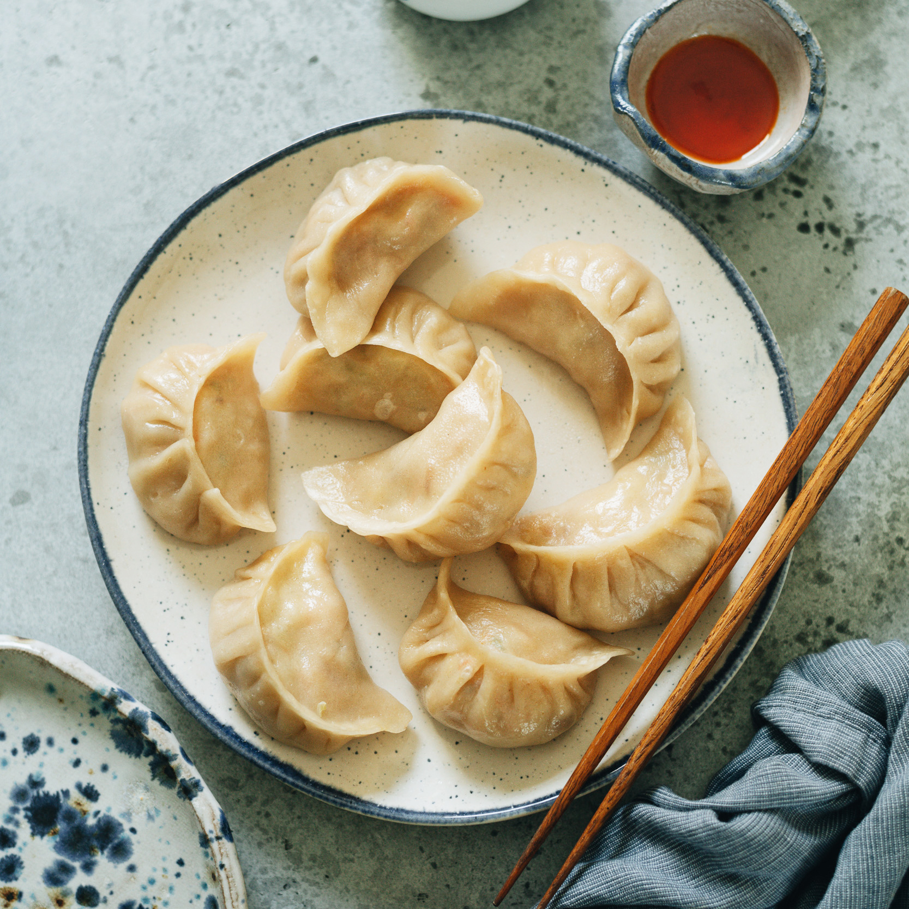

Dumplings

Jiaozi
Chinese dumplings (Jiaozi, 饺子) are stuffed parcels made of unleavened dough and savoury fillings consisting of
minced ingredients like meat, egg, tofu, or vegetables. They can be boiled, pan-fried or steamed.
A much-loved delicacy and a symbol of unity, Chinese dumplings are one of the best foods to prepare with family
and friends. I hope this ultimate how-to guide provides all the information you need for a successful outcome.
Ingredients
- Flour
- Water
- Red Cabagge
- Green Onion
- Garlic
- Ginger
- Soy Sauce
- Sesame Oil
- Ground Pork
- Pepper
- Shrimp
- Mushroom
- Carrot
Steps
- In a large bowl, combine the flour, 1 teaspoon of salt, and the warm water and mix until well-combined.
- Roll out dough on a floured surface and knead until smooth.
- Divide the dough into 4 equal parts.
- Roll out 1 piece of dough into a thin log and divide into 6 or 8 pieces, depending on the size of dumplings you want. Repeat with the remaining dough portions.
- Lightly flour the dough pieces and roll out 1 piece into a thin circle roughly 4-inches (10 cm) in diameter.
- Keep the dumpling wrappers separated with a small piece of parchment paper and repeat with the remaining dough.
- Combine the cabbage, green onions, garlic, ginger, soy sauce, and sesame oil in a medium bowl and mix until well-incorporated.
- For the pork filling, combine the ground pork with the remaining teaspoon of salt, the pepper and 1 cup (125g) of the cabbage mixture and stir until well-incorporated.
- For the veggie filling, combine the mushrooms and carrot and microwave for 3 minutes, until soft. Add 1 cup (125g) of the cabbage mixture and stir until well-incorporated.
- For the shrimp filling, combine the shrimp with 1 cup (125g) of the cabbage mixture and stir until well-incorporated.
- To assemble the dumplings, add roughly 1 heaping tablespoon of filling to the center of a dumpling wrapper. With your finger, lightly coat half of the outside of the wrapper with water. Fold the moistened half of the wrapper over the filling and, using your fingers, pleat the edges to seal. Repeat with the remaining fillings and wrappers.
- Heat the oil over medium high in a large skillet and add a few dumplings, cooking them in batches. Once the bottoms of the dumplings start to brown, add a splash of water and cover with a lid. Steam for about 5 minutes, or until the dumplings are cooked and the water has evaporated. Transfer the cooked dumplings to a paper towel-lined plate to remove any excess moisture or grease.
- In a small bowl, combine the soy sauce, rice vinegar, sesame oil, and pepper flakes and stir to combine. Serve the dumplings immediately with the dipping sauce.